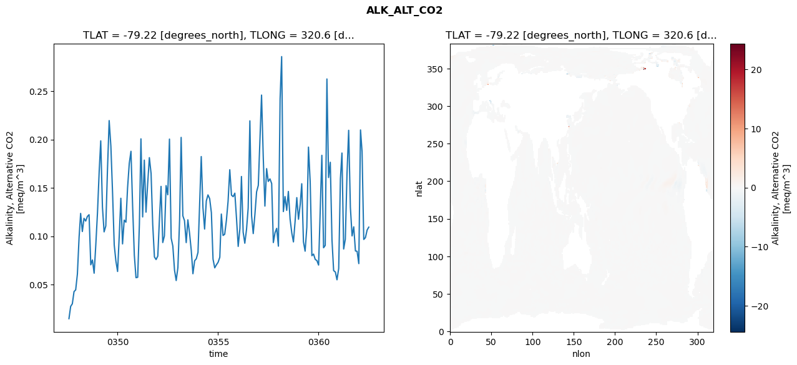
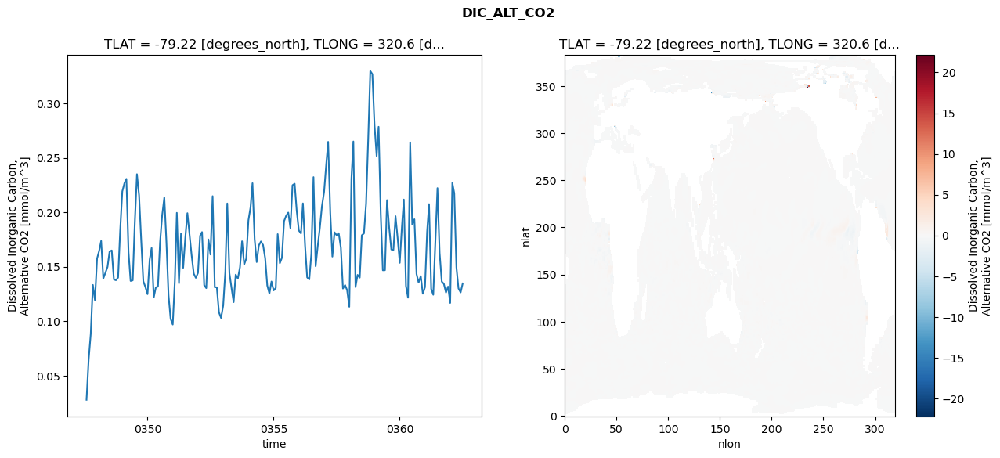
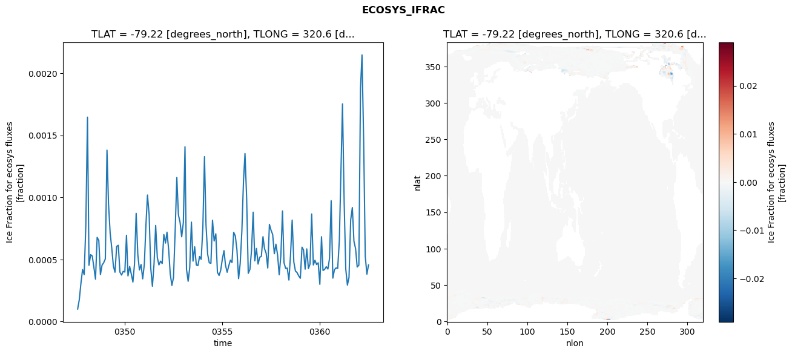
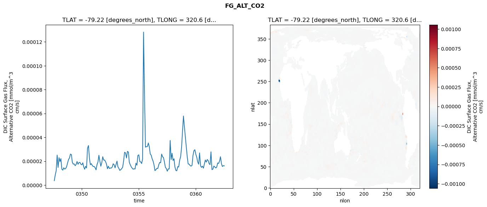

glb-dor_North_Atlantic_basin_038_1999-07-01_00154#
Simulation details#
Case: smyle.cdr-atlas-v0.glb-dor_North_Atlantic_basin_038_1999-07-01_00154.001
Basin: North_Atlantic_basin
Polygon: 38.0
Start date: 1999-07
Show code cell source Hide code cell source
import xarray as xr
import matplotlib.pyplot as plt
Show code cell source Hide code cell source
zarr_store = "/path/to/zarr/store"
# Parameters
zarr_store = "/global/cfs/projectdirs/m4746/Projects/Ocean-CDR-Atlas-v0/data/validation/smyle.cdr-atlas-v0.glb-dor_North_Atlantic_basin_038_1999-07-01_00154.001.validation.zarr"
Show code cell source Hide code cell source
%%time
ds_o = xr.open_zarr(zarr_store).compute()
ds_o
CPU times: user 604 ms, sys: 461 ms, total: 1.06 s
Wall time: 1.24 s
<xarray.Dataset> Size: 2MB
Dimensions: (nlat: 384, nlon: 320, time: 180)
Coordinates:
TLAT float64 8B -79.22
TLONG float64 8B 320.6
ULAT float64 8B -78.95
ULONG float64 8B 321.1
* time (time) object 1kB 0347-08-01 00:00:00 ... 0362-07-01 0...
z_t float32 4B 500.0
Dimensions without coordinates: nlat, nlon
Data variables:
ALK_ALT_CO2_diff (nlat, nlon) float32 492kB nan nan nan ... nan nan nan
ALK_ALT_CO2_rmse (time) float64 1kB 0.01466 0.02736 ... 0.1063 0.1093
DIC_ALT_CO2_diff (nlat, nlon) float32 492kB nan nan nan ... nan nan nan
DIC_ALT_CO2_rmse (time) float64 1kB 0.02775 0.06493 ... 0.1264 0.1347
ECOSYS_IFRAC_diff (nlat, nlon) float32 492kB nan nan nan ... nan nan nan
ECOSYS_IFRAC_rmse (time) float64 1kB 0.000101 0.0001776 ... 0.0004569
FG_ALT_CO2_diff (nlat, nlon) float32 492kB nan nan nan ... nan nan nan
FG_ALT_CO2_rmse (time) float64 1kB 3.666e-06 8.436e-06 ... 1.614e-05xarray.Dataset
- nlat: 384
- nlon: 320
- time: 180
- TLAT()float64-79.22
- long_name :
- array of t-grid latitudes
- units :
- degrees_north
array(-79.22052261)
- TLONG()float64320.6
- long_name :
- array of t-grid longitudes
- units :
- degrees_east
array(320.56250892)
- ULAT()float64-78.95
- long_name :
- array of u-grid latitudes
- units :
- degrees_north
array(-78.95289509)
- ULONG()float64321.1
- long_name :
- array of u-grid longitudes
- units :
- degrees_east
array(321.12500894)
- time(time)object0347-08-01 00:00:00 ... 0362-07-...
- bounds :
- time_bound
- long_name :
- time
array([cftime.DatetimeNoLeap(347, 8, 1, 0, 0, 0, 0, has_year_zero=True), cftime.DatetimeNoLeap(347, 9, 1, 0, 0, 0, 0, has_year_zero=True), cftime.DatetimeNoLeap(347, 10, 1, 0, 0, 0, 0, has_year_zero=True), cftime.DatetimeNoLeap(347, 11, 1, 0, 0, 0, 0, has_year_zero=True), cftime.DatetimeNoLeap(347, 12, 1, 0, 0, 0, 0, has_year_zero=True), cftime.DatetimeNoLeap(348, 1, 1, 0, 0, 0, 0, has_year_zero=True), cftime.DatetimeNoLeap(348, 2, 1, 0, 0, 0, 0, has_year_zero=True), cftime.DatetimeNoLeap(348, 3, 1, 0, 0, 0, 0, has_year_zero=True), cftime.DatetimeNoLeap(348, 4, 1, 0, 0, 0, 0, has_year_zero=True), cftime.DatetimeNoLeap(348, 5, 1, 0, 0, 0, 0, has_year_zero=True), cftime.DatetimeNoLeap(348, 6, 1, 0, 0, 0, 0, has_year_zero=True), cftime.DatetimeNoLeap(348, 7, 1, 0, 0, 0, 0, has_year_zero=True), cftime.DatetimeNoLeap(348, 8, 1, 0, 0, 0, 0, has_year_zero=True), cftime.DatetimeNoLeap(348, 9, 1, 0, 0, 0, 0, has_year_zero=True), cftime.DatetimeNoLeap(348, 10, 1, 0, 0, 0, 0, has_year_zero=True), cftime.DatetimeNoLeap(348, 11, 1, 0, 0, 0, 0, has_year_zero=True), cftime.DatetimeNoLeap(348, 12, 1, 0, 0, 0, 0, has_year_zero=True), cftime.DatetimeNoLeap(349, 1, 1, 0, 0, 0, 0, has_year_zero=True), cftime.DatetimeNoLeap(349, 2, 1, 0, 0, 0, 0, has_year_zero=True), cftime.DatetimeNoLeap(349, 3, 1, 0, 0, 0, 0, has_year_zero=True), cftime.DatetimeNoLeap(349, 4, 1, 0, 0, 0, 0, has_year_zero=True), cftime.DatetimeNoLeap(349, 5, 1, 0, 0, 0, 0, has_year_zero=True), cftime.DatetimeNoLeap(349, 6, 1, 0, 0, 0, 0, has_year_zero=True), cftime.DatetimeNoLeap(349, 7, 1, 0, 0, 0, 0, has_year_zero=True), cftime.DatetimeNoLeap(349, 8, 1, 0, 0, 0, 0, has_year_zero=True), cftime.DatetimeNoLeap(349, 9, 1, 0, 0, 0, 0, has_year_zero=True), cftime.DatetimeNoLeap(349, 10, 1, 0, 0, 0, 0, has_year_zero=True), cftime.DatetimeNoLeap(349, 11, 1, 0, 0, 0, 0, has_year_zero=True), cftime.DatetimeNoLeap(349, 12, 1, 0, 0, 0, 0, has_year_zero=True), cftime.DatetimeNoLeap(350, 1, 1, 0, 0, 0, 0, has_year_zero=True), cftime.DatetimeNoLeap(350, 2, 1, 0, 0, 0, 0, has_year_zero=True), cftime.DatetimeNoLeap(350, 3, 1, 0, 0, 0, 0, has_year_zero=True), cftime.DatetimeNoLeap(350, 4, 1, 0, 0, 0, 0, has_year_zero=True), cftime.DatetimeNoLeap(350, 5, 1, 0, 0, 0, 0, has_year_zero=True), cftime.DatetimeNoLeap(350, 6, 1, 0, 0, 0, 0, has_year_zero=True), cftime.DatetimeNoLeap(350, 7, 1, 0, 0, 0, 0, has_year_zero=True), cftime.DatetimeNoLeap(350, 8, 1, 0, 0, 0, 0, has_year_zero=True), cftime.DatetimeNoLeap(350, 9, 1, 0, 0, 0, 0, has_year_zero=True), cftime.DatetimeNoLeap(350, 10, 1, 0, 0, 0, 0, has_year_zero=True), cftime.DatetimeNoLeap(350, 11, 1, 0, 0, 0, 0, has_year_zero=True), cftime.DatetimeNoLeap(350, 12, 1, 0, 0, 0, 0, has_year_zero=True), cftime.DatetimeNoLeap(351, 1, 1, 0, 0, 0, 0, has_year_zero=True), cftime.DatetimeNoLeap(351, 2, 1, 0, 0, 0, 0, has_year_zero=True), cftime.DatetimeNoLeap(351, 3, 1, 0, 0, 0, 0, has_year_zero=True), cftime.DatetimeNoLeap(351, 4, 1, 0, 0, 0, 0, has_year_zero=True), cftime.DatetimeNoLeap(351, 5, 1, 0, 0, 0, 0, has_year_zero=True), cftime.DatetimeNoLeap(351, 6, 1, 0, 0, 0, 0, has_year_zero=True), cftime.DatetimeNoLeap(351, 7, 1, 0, 0, 0, 0, has_year_zero=True), cftime.DatetimeNoLeap(351, 8, 1, 0, 0, 0, 0, has_year_zero=True), cftime.DatetimeNoLeap(351, 9, 1, 0, 0, 0, 0, has_year_zero=True), cftime.DatetimeNoLeap(351, 10, 1, 0, 0, 0, 0, has_year_zero=True), cftime.DatetimeNoLeap(351, 11, 1, 0, 0, 0, 0, has_year_zero=True), cftime.DatetimeNoLeap(351, 12, 1, 0, 0, 0, 0, has_year_zero=True), cftime.DatetimeNoLeap(352, 1, 1, 0, 0, 0, 0, has_year_zero=True), cftime.DatetimeNoLeap(352, 2, 1, 0, 0, 0, 0, has_year_zero=True), cftime.DatetimeNoLeap(352, 3, 1, 0, 0, 0, 0, has_year_zero=True), cftime.DatetimeNoLeap(352, 4, 1, 0, 0, 0, 0, has_year_zero=True), cftime.DatetimeNoLeap(352, 5, 1, 0, 0, 0, 0, has_year_zero=True), cftime.DatetimeNoLeap(352, 6, 1, 0, 0, 0, 0, has_year_zero=True), cftime.DatetimeNoLeap(352, 7, 1, 0, 0, 0, 0, has_year_zero=True), cftime.DatetimeNoLeap(352, 8, 1, 0, 0, 0, 0, has_year_zero=True), cftime.DatetimeNoLeap(352, 9, 1, 0, 0, 0, 0, has_year_zero=True), cftime.DatetimeNoLeap(352, 10, 1, 0, 0, 0, 0, has_year_zero=True), cftime.DatetimeNoLeap(352, 11, 1, 0, 0, 0, 0, has_year_zero=True), cftime.DatetimeNoLeap(352, 12, 1, 0, 0, 0, 0, has_year_zero=True), cftime.DatetimeNoLeap(353, 1, 1, 0, 0, 0, 0, has_year_zero=True), cftime.DatetimeNoLeap(353, 2, 1, 0, 0, 0, 0, has_year_zero=True), cftime.DatetimeNoLeap(353, 3, 1, 0, 0, 0, 0, has_year_zero=True), cftime.DatetimeNoLeap(353, 4, 1, 0, 0, 0, 0, has_year_zero=True), cftime.DatetimeNoLeap(353, 5, 1, 0, 0, 0, 0, has_year_zero=True), cftime.DatetimeNoLeap(353, 6, 1, 0, 0, 0, 0, has_year_zero=True), cftime.DatetimeNoLeap(353, 7, 1, 0, 0, 0, 0, has_year_zero=True), cftime.DatetimeNoLeap(353, 8, 1, 0, 0, 0, 0, has_year_zero=True), cftime.DatetimeNoLeap(353, 9, 1, 0, 0, 0, 0, has_year_zero=True), cftime.DatetimeNoLeap(353, 10, 1, 0, 0, 0, 0, has_year_zero=True), cftime.DatetimeNoLeap(353, 11, 1, 0, 0, 0, 0, has_year_zero=True), cftime.DatetimeNoLeap(353, 12, 1, 0, 0, 0, 0, has_year_zero=True), cftime.DatetimeNoLeap(354, 1, 1, 0, 0, 0, 0, has_year_zero=True), cftime.DatetimeNoLeap(354, 2, 1, 0, 0, 0, 0, has_year_zero=True), cftime.DatetimeNoLeap(354, 3, 1, 0, 0, 0, 0, has_year_zero=True), cftime.DatetimeNoLeap(354, 4, 1, 0, 0, 0, 0, has_year_zero=True), cftime.DatetimeNoLeap(354, 5, 1, 0, 0, 0, 0, has_year_zero=True), cftime.DatetimeNoLeap(354, 6, 1, 0, 0, 0, 0, has_year_zero=True), cftime.DatetimeNoLeap(354, 7, 1, 0, 0, 0, 0, has_year_zero=True), cftime.DatetimeNoLeap(354, 8, 1, 0, 0, 0, 0, has_year_zero=True), cftime.DatetimeNoLeap(354, 9, 1, 0, 0, 0, 0, has_year_zero=True), cftime.DatetimeNoLeap(354, 10, 1, 0, 0, 0, 0, has_year_zero=True), cftime.DatetimeNoLeap(354, 11, 1, 0, 0, 0, 0, has_year_zero=True), cftime.DatetimeNoLeap(354, 12, 1, 0, 0, 0, 0, has_year_zero=True), cftime.DatetimeNoLeap(355, 1, 1, 0, 0, 0, 0, has_year_zero=True), cftime.DatetimeNoLeap(355, 2, 1, 0, 0, 0, 0, has_year_zero=True), cftime.DatetimeNoLeap(355, 3, 1, 0, 0, 0, 0, has_year_zero=True), cftime.DatetimeNoLeap(355, 4, 1, 0, 0, 0, 0, has_year_zero=True), cftime.DatetimeNoLeap(355, 5, 1, 0, 0, 0, 0, has_year_zero=True), cftime.DatetimeNoLeap(355, 6, 1, 0, 0, 0, 0, has_year_zero=True), cftime.DatetimeNoLeap(355, 7, 1, 0, 0, 0, 0, has_year_zero=True), cftime.DatetimeNoLeap(355, 8, 1, 0, 0, 0, 0, has_year_zero=True), cftime.DatetimeNoLeap(355, 9, 1, 0, 0, 0, 0, has_year_zero=True), cftime.DatetimeNoLeap(355, 10, 1, 0, 0, 0, 0, has_year_zero=True), cftime.DatetimeNoLeap(355, 11, 1, 0, 0, 0, 0, has_year_zero=True), cftime.DatetimeNoLeap(355, 12, 1, 0, 0, 0, 0, has_year_zero=True), cftime.DatetimeNoLeap(356, 1, 1, 0, 0, 0, 0, has_year_zero=True), cftime.DatetimeNoLeap(356, 2, 1, 0, 0, 0, 0, has_year_zero=True), cftime.DatetimeNoLeap(356, 3, 1, 0, 0, 0, 0, has_year_zero=True), cftime.DatetimeNoLeap(356, 4, 1, 0, 0, 0, 0, has_year_zero=True), cftime.DatetimeNoLeap(356, 5, 1, 0, 0, 0, 0, has_year_zero=True), cftime.DatetimeNoLeap(356, 6, 1, 0, 0, 0, 0, has_year_zero=True), cftime.DatetimeNoLeap(356, 7, 1, 0, 0, 0, 0, has_year_zero=True), cftime.DatetimeNoLeap(356, 8, 1, 0, 0, 0, 0, has_year_zero=True), cftime.DatetimeNoLeap(356, 9, 1, 0, 0, 0, 0, has_year_zero=True), cftime.DatetimeNoLeap(356, 10, 1, 0, 0, 0, 0, has_year_zero=True), cftime.DatetimeNoLeap(356, 11, 1, 0, 0, 0, 0, has_year_zero=True), cftime.DatetimeNoLeap(356, 12, 1, 0, 0, 0, 0, has_year_zero=True), cftime.DatetimeNoLeap(357, 1, 1, 0, 0, 0, 0, has_year_zero=True), cftime.DatetimeNoLeap(357, 2, 1, 0, 0, 0, 0, has_year_zero=True), cftime.DatetimeNoLeap(357, 3, 1, 0, 0, 0, 0, has_year_zero=True), cftime.DatetimeNoLeap(357, 4, 1, 0, 0, 0, 0, has_year_zero=True), cftime.DatetimeNoLeap(357, 5, 1, 0, 0, 0, 0, has_year_zero=True), cftime.DatetimeNoLeap(357, 6, 1, 0, 0, 0, 0, has_year_zero=True), cftime.DatetimeNoLeap(357, 7, 1, 0, 0, 0, 0, has_year_zero=True), cftime.DatetimeNoLeap(357, 8, 1, 0, 0, 0, 0, has_year_zero=True), cftime.DatetimeNoLeap(357, 9, 1, 0, 0, 0, 0, has_year_zero=True), cftime.DatetimeNoLeap(357, 10, 1, 0, 0, 0, 0, has_year_zero=True), cftime.DatetimeNoLeap(357, 11, 1, 0, 0, 0, 0, has_year_zero=True), cftime.DatetimeNoLeap(357, 12, 1, 0, 0, 0, 0, has_year_zero=True), cftime.DatetimeNoLeap(358, 1, 1, 0, 0, 0, 0, has_year_zero=True), cftime.DatetimeNoLeap(358, 2, 1, 0, 0, 0, 0, has_year_zero=True), cftime.DatetimeNoLeap(358, 3, 1, 0, 0, 0, 0, has_year_zero=True), cftime.DatetimeNoLeap(358, 4, 1, 0, 0, 0, 0, has_year_zero=True), cftime.DatetimeNoLeap(358, 5, 1, 0, 0, 0, 0, has_year_zero=True), cftime.DatetimeNoLeap(358, 6, 1, 0, 0, 0, 0, has_year_zero=True), cftime.DatetimeNoLeap(358, 7, 1, 0, 0, 0, 0, has_year_zero=True), cftime.DatetimeNoLeap(358, 8, 1, 0, 0, 0, 0, has_year_zero=True), cftime.DatetimeNoLeap(358, 9, 1, 0, 0, 0, 0, has_year_zero=True), cftime.DatetimeNoLeap(358, 10, 1, 0, 0, 0, 0, has_year_zero=True), cftime.DatetimeNoLeap(358, 11, 1, 0, 0, 0, 0, has_year_zero=True), cftime.DatetimeNoLeap(358, 12, 1, 0, 0, 0, 0, has_year_zero=True), cftime.DatetimeNoLeap(359, 1, 1, 0, 0, 0, 0, has_year_zero=True), cftime.DatetimeNoLeap(359, 2, 1, 0, 0, 0, 0, has_year_zero=True), cftime.DatetimeNoLeap(359, 3, 1, 0, 0, 0, 0, has_year_zero=True), cftime.DatetimeNoLeap(359, 4, 1, 0, 0, 0, 0, has_year_zero=True), cftime.DatetimeNoLeap(359, 5, 1, 0, 0, 0, 0, has_year_zero=True), cftime.DatetimeNoLeap(359, 6, 1, 0, 0, 0, 0, has_year_zero=True), cftime.DatetimeNoLeap(359, 7, 1, 0, 0, 0, 0, has_year_zero=True), cftime.DatetimeNoLeap(359, 8, 1, 0, 0, 0, 0, has_year_zero=True), cftime.DatetimeNoLeap(359, 9, 1, 0, 0, 0, 0, has_year_zero=True), cftime.DatetimeNoLeap(359, 10, 1, 0, 0, 0, 0, has_year_zero=True), cftime.DatetimeNoLeap(359, 11, 1, 0, 0, 0, 0, has_year_zero=True), cftime.DatetimeNoLeap(359, 12, 1, 0, 0, 0, 0, has_year_zero=True), cftime.DatetimeNoLeap(360, 1, 1, 0, 0, 0, 0, has_year_zero=True), cftime.DatetimeNoLeap(360, 2, 1, 0, 0, 0, 0, has_year_zero=True), cftime.DatetimeNoLeap(360, 3, 1, 0, 0, 0, 0, has_year_zero=True), cftime.DatetimeNoLeap(360, 4, 1, 0, 0, 0, 0, has_year_zero=True), cftime.DatetimeNoLeap(360, 5, 1, 0, 0, 0, 0, has_year_zero=True), cftime.DatetimeNoLeap(360, 6, 1, 0, 0, 0, 0, has_year_zero=True), cftime.DatetimeNoLeap(360, 7, 1, 0, 0, 0, 0, has_year_zero=True), cftime.DatetimeNoLeap(360, 8, 1, 0, 0, 0, 0, has_year_zero=True), cftime.DatetimeNoLeap(360, 9, 1, 0, 0, 0, 0, has_year_zero=True), cftime.DatetimeNoLeap(360, 10, 1, 0, 0, 0, 0, has_year_zero=True), cftime.DatetimeNoLeap(360, 11, 1, 0, 0, 0, 0, has_year_zero=True), cftime.DatetimeNoLeap(360, 12, 1, 0, 0, 0, 0, has_year_zero=True), cftime.DatetimeNoLeap(361, 1, 1, 0, 0, 0, 0, has_year_zero=True), cftime.DatetimeNoLeap(361, 2, 1, 0, 0, 0, 0, has_year_zero=True), cftime.DatetimeNoLeap(361, 3, 1, 0, 0, 0, 0, has_year_zero=True), cftime.DatetimeNoLeap(361, 4, 1, 0, 0, 0, 0, has_year_zero=True), cftime.DatetimeNoLeap(361, 5, 1, 0, 0, 0, 0, has_year_zero=True), cftime.DatetimeNoLeap(361, 6, 1, 0, 0, 0, 0, has_year_zero=True), cftime.DatetimeNoLeap(361, 7, 1, 0, 0, 0, 0, has_year_zero=True), cftime.DatetimeNoLeap(361, 8, 1, 0, 0, 0, 0, has_year_zero=True), cftime.DatetimeNoLeap(361, 9, 1, 0, 0, 0, 0, has_year_zero=True), cftime.DatetimeNoLeap(361, 10, 1, 0, 0, 0, 0, has_year_zero=True), cftime.DatetimeNoLeap(361, 11, 1, 0, 0, 0, 0, has_year_zero=True), cftime.DatetimeNoLeap(361, 12, 1, 0, 0, 0, 0, has_year_zero=True), cftime.DatetimeNoLeap(362, 1, 1, 0, 0, 0, 0, has_year_zero=True), cftime.DatetimeNoLeap(362, 2, 1, 0, 0, 0, 0, has_year_zero=True), cftime.DatetimeNoLeap(362, 3, 1, 0, 0, 0, 0, has_year_zero=True), cftime.DatetimeNoLeap(362, 4, 1, 0, 0, 0, 0, has_year_zero=True), cftime.DatetimeNoLeap(362, 5, 1, 0, 0, 0, 0, has_year_zero=True), cftime.DatetimeNoLeap(362, 6, 1, 0, 0, 0, 0, has_year_zero=True), cftime.DatetimeNoLeap(362, 7, 1, 0, 0, 0, 0, has_year_zero=True)], dtype=object) - z_t()float32500.0
- long_name :
- depth from surface to midpoint of layer
- positive :
- down
- units :
- centimeters
- valid_max :
- 537500.0
- valid_min :
- 500.0
array(500., dtype=float32)
- ALK_ALT_CO2_diff(nlat, nlon)float32nan nan nan nan ... nan nan nan nan
- cell_methods :
- time: mean
- grid_loc :
- 3111
- long_name :
- Alkalinity, Alternative CO2
- units :
- meq/m^3
array([[ nan, nan, nan, ..., nan, nan, nan], [ nan, nan, nan, ..., nan, nan, nan], [0.01049805, 0.00488281, 0.0144043 , ..., nan, nan, nan], ..., [ nan, nan, nan, ..., nan, nan, nan], [ nan, nan, nan, ..., nan, nan, nan], [ nan, nan, nan, ..., nan, nan, nan]], dtype=float32) - ALK_ALT_CO2_rmse(time)float640.01466 0.02736 ... 0.1063 0.1093
- cell_methods :
- time: mean
- grid_loc :
- 3111
- long_name :
- Alkalinity, Alternative CO2
- units :
- meq/m^3
array([0.01465667, 0.02735512, 0.03000779, 0.04266 , 0.04443762, 0.06078113, 0.09899868, 0.12355149, 0.1048282 , 0.1184657 , 0.11564373, 0.1204279 , 0.12220814, 0.07035592, 0.07540618, 0.06168665, 0.09068503, 0.12434019, 0.16737313, 0.1986361 , 0.13012819, 0.10443356, 0.11055848, 0.16824867, 0.219595 , 0.19316954, 0.14601032, 0.09084304, 0.07441263, 0.06347236, 0.10150786, 0.13923684, 0.09201682, 0.11660394, 0.11448918, 0.14977363, 0.175301 , 0.18783265, 0.13092776, 0.08035371, 0.05703992, 0.05746809, 0.1126864 , 0.20071628, 0.11992204, 0.17869177, 0.12487939, 0.15423566, 0.18125655, 0.16488092, 0.11196756, 0.0784818 , 0.07584685, 0.07942888, 0.11909762, 0.15150643, 0.09342095, 0.10029088, 0.15233219, 0.14286323, 0.2004463 , 0.09792389, 0.0898227 , 0.06472884, 0.05412199, 0.0674997 , 0.11681616, 0.20220765, 0.12109159, 0.11607549, 0.09335898, 0.11692354, 0.10292628, 0.08511525, 0.0611455 , 0.07457025, 0.07660542, 0.08321109, 0.13501242, 0.18237603, 0.12942502, 0.10740409, 0.13647043, 0.14271365, 0.13880275, 0.12432587, 0.07624095, 0.06723118, 0.07033099, 0.07299347, 0.07818218, 0.12287771, 0.10072281, 0.10200658, 0.11651347, 0.1359872 , 0.16875501, 0.14243147, 0.14087863, 0.14450654, 0.11863866, 0.08941903, 0.10787111, 0.16175281, 0.10413166, 0.09272041, 0.10681478, 0.12908478, 0.21931939, 0.12117905, 0.1026854 , 0.12285651, 0.14585875, 0.1525665 , 0.20100246, 0.24599148, 0.18158745, 0.13113903, 0.16990238, 0.1566204 , 0.15928321, 0.15443827, 0.09340414, 0.10360793, 0.10811991, 0.08967162, 0.24222945, 0.28580403, 0.12546228, 0.14096292, 0.12673114, 0.14628212, 0.11768514, 0.10337417, 0.09407038, 0.11584588, 0.13990421, 0.11749124, 0.13289488, 0.15426407, 0.09410205, 0.08448639, 0.10922173, 0.19215268, 0.15653762, 0.07979994, 0.08146532, 0.0759333 , 0.07475815, 0.07009739, 0.12948812, 0.18366107, 0.0880207 , 0.0904406 , 0.2626556 , 0.16067414, 0.17645921, 0.09611081, 0.06438152, 0.06295103, 0.0548621 , 0.06658932, 0.15938241, 0.18603336, 0.08673446, 0.0968312 , 0.16494488, 0.20953783, 0.12981145, 0.10028238, 0.10968204, 0.08473569, 0.08438187, 0.07161165, 0.20991874, 0.18764765, 0.09662599, 0.09847291, 0.1063421 , 0.10933722]) - DIC_ALT_CO2_diff(nlat, nlon)float32nan nan nan nan ... nan nan nan nan
- cell_methods :
- time: mean
- grid_loc :
- 3111
- long_name :
- Dissolved Inorganic Carbon, Alternative CO2
- units :
- mmol/m^3
array([[ nan, nan, nan, ..., nan, nan, nan], [ nan, nan, nan, ..., nan, nan, nan], [-0.00561523, -0.0078125 , -0.00317383, ..., nan, nan, nan], ..., [ nan, nan, nan, ..., nan, nan, nan], [ nan, nan, nan, ..., nan, nan, nan], [ nan, nan, nan, ..., nan, nan, nan]], dtype=float32) - DIC_ALT_CO2_rmse(time)float640.02775 0.06493 ... 0.1264 0.1347
- cell_methods :
- time: mean
- grid_loc :
- 3111
- long_name :
- Dissolved Inorganic Carbon, Alternative CO2
- units :
- mmol/m^3
array([0.02775269, 0.06492548, 0.08803204, 0.13328615, 0.11925979, 0.15750011, 0.16488833, 0.17367708, 0.13917304, 0.14428465, 0.14980812, 0.16397403, 0.16495345, 0.13828274, 0.13759631, 0.1399986 , 0.18286051, 0.21919835, 0.22671251, 0.2306879 , 0.1633436 , 0.13690956, 0.13750222, 0.19032166, 0.23498293, 0.21536901, 0.1749981 , 0.13670351, 0.13138314, 0.12476612, 0.15643618, 0.16720776, 0.12171723, 0.13097575, 0.13179626, 0.17211443, 0.19734628, 0.21366235, 0.17320298, 0.12379494, 0.10218349, 0.09688963, 0.13785354, 0.19950182, 0.13482674, 0.18058677, 0.14897394, 0.17604061, 0.19918373, 0.17943176, 0.16060199, 0.14367366, 0.13978014, 0.14426929, 0.17842108, 0.18184907, 0.1330081 , 0.13032361, 0.17506409, 0.16116353, 0.21480382, 0.1311213 , 0.13109095, 0.10813719, 0.10296015, 0.11427315, 0.14528556, 0.20809374, 0.14412746, 0.13070814, 0.11745169, 0.14271711, 0.13903535, 0.14950037, 0.17336475, 0.15203912, 0.15736556, 0.19254495, 0.20463212, 0.22670697, 0.17533837, 0.15424505, 0.16955225, 0.17319889, 0.17000285, 0.15766728, 0.13269496, 0.12534575, 0.13642716, 0.12823258, 0.13042659, 0.17993723, 0.15319472, 0.15820491, 0.19181861, 0.19676881, 0.19971875, 0.18546468, 0.22485867, 0.22621126, 0.2013491 , 0.18323057, 0.18055343, 0.20817025, 0.16943869, 0.1401951 , 0.13829463, 0.16167914, 0.2322972 , 0.15044302, 0.16881963, 0.18577134, 0.20546781, 0.21855698, 0.24372226, 0.26468876, 0.19923473, 0.1592813 , 0.18161456, 0.17899551, 0.18078148, 0.16754057, 0.12994008, 0.13313217, 0.12834152, 0.11320774, 0.23079435, 0.26500819, 0.13134512, 0.14250687, 0.13995877, 0.17889494, 0.18057495, 0.20779723, 0.26546906, 0.32967836, 0.32685961, 0.27999115, 0.25159917, 0.27852226, 0.19843305, 0.14669714, 0.14677475, 0.21116059, 0.18597156, 0.16581898, 0.16527147, 0.19641629, 0.1766519 , 0.15353592, 0.18638862, 0.21169622, 0.13236929, 0.12153746, 0.26421438, 0.1886467 , 0.19360508, 0.14330378, 0.13543285, 0.14144393, 0.12517457, 0.13123706, 0.1820924 , 0.20749076, 0.12964823, 0.12421019, 0.17399208, 0.22218714, 0.16261293, 0.13633366, 0.1343187 , 0.12626741, 0.13175467, 0.11674106, 0.22705892, 0.21739456, 0.14956291, 0.13006615, 0.12639814, 0.13465353]) - ECOSYS_IFRAC_diff(nlat, nlon)float32nan nan nan nan ... nan nan nan nan
- cell_methods :
- time: mean
- grid_loc :
- 2110
- long_name :
- Ice Fraction for ecosys fluxes
- units :
- fraction
array([[ nan, nan, nan, ..., nan, nan, nan], [ nan, nan, nan, ..., nan, nan, nan], [2.2113323e-05, 6.2704086e-05, 3.1352043e-05, ..., nan, nan, nan], ..., [ nan, nan, nan, ..., nan, nan, nan], [ nan, nan, nan, ..., nan, nan, nan], [ nan, nan, nan, ..., nan, nan, nan]], dtype=float32) - ECOSYS_IFRAC_rmse(time)float640.000101 0.0001776 ... 0.0004569
- cell_methods :
- time: mean
- grid_loc :
- 2110
- long_name :
- Ice Fraction for ecosys fluxes
- units :
- fraction
array([0.00010103, 0.00017764, 0.00030745, 0.00041931, 0.00037802, 0.00077412, 0.00164653, 0.00045384, 0.0005391 , 0.00052881, 0.00043747, 0.00034167, 0.00067841, 0.0006526 , 0.00037836, 0.00045546, 0.00047383, 0.00050504, 0.00138072, 0.00095379, 0.00071502, 0.00059338, 0.00044648, 0.00039763, 0.00060603, 0.00061456, 0.00039857, 0.00037474, 0.00040455, 0.00039915, 0.00069535, 0.00036784, 0.00044459, 0.00038432, 0.0003186 , 0.0004637 , 0.00087192, 0.00054022, 0.00041576, 0.00045997, 0.00034437, 0.00046121, 0.00078715, 0.00101923, 0.00085963, 0.00043186, 0.0002845 , 0.00045977, 0.00077405, 0.00051649, 0.00045638, 0.00048698, 0.00046731, 0.00070117, 0.0006322 , 0.00072016, 0.00058246, 0.00038359, 0.00029111, 0.00035551, 0.00072825, 0.00116066, 0.00085954, 0.00079893, 0.0006827 , 0.00079739, 0.00140823, 0.00042212, 0.00032483, 0.00043456, 0.00080146, 0.00048716, 0.00060271, 0.00045614, 0.00045112, 0.00052422, 0.00050139, 0.00075266, 0.00132839, 0.00078065, 0.00054293, 0.00047366, 0.0004692 , 0.00081687, 0.00064919, 0.00070718, 0.00039648, 0.00037168, 0.00041254, 0.00050283, 0.00057158, 0.00045431, 0.00039711, 0.00044923, 0.00049516, 0.00047519, 0.00071944, 0.00068978, 0.00057937, 0.00034547, 0.00046787, 0.00072433, 0.00113535, 0.00135348, 0.00099374, 0.00038879, 0.00041983, 0.00057247, 0.00088137, 0.00048934, 0.00058894, 0.00046335, 0.00051821, 0.00052497, 0.00068402, 0.00058802, 0.00055042, 0.00043151, 0.0007829 , 0.00073635, 0.0007017 , 0.00054669, 0.00062331, 0.00053664, 0.00037726, 0.00052904, 0.0008912 , 0.00047418, 0.00042836, 0.00043123, 0.00033459, 0.00053427, 0.00081791, 0.00047973, 0.0004075 , 0.00039459, 0.00036852, 0.00034892, 0.00059936, 0.00057835, 0.00042227, 0.00058562, 0.0004278 , 0.00046298, 0.00086676, 0.000456 , 0.00049404, 0.00045943, 0.00047343, 0.00030019, 0.00068358, 0.00041177, 0.00042069, 0.00044198, 0.00042345, 0.00050898, 0.00097364, 0.00035012, 0.00041807, 0.00043274, 0.00042851, 0.0006537 , 0.00124206, 0.00175351, 0.00096027, 0.00042375, 0.00029379, 0.00035675, 0.00081807, 0.00091847, 0.0006474 , 0.00058742, 0.00043976, 0.00045392, 0.00188158, 0.00214804, 0.00145654, 0.00052477, 0.00038214, 0.00045687]) - FG_ALT_CO2_diff(nlat, nlon)float32nan nan nan nan ... nan nan nan nan
- cell_methods :
- time: mean
- grid_loc :
- 2110
- long_name :
- DIC Surface Gas Flux, Alternative CO2
- units :
- mmol/m^3 cm/s
array([[ nan, nan, nan, ..., nan, nan, nan], [ nan, nan, nan, ..., nan, nan, nan], [-9.8839337e-10, 1.9099389e-09, -1.3522055e-09, ..., nan, nan, nan], ..., [ nan, nan, nan, ..., nan, nan, nan], [ nan, nan, nan, ..., nan, nan, nan], [ nan, nan, nan, ..., nan, nan, nan]], dtype=float32) - FG_ALT_CO2_rmse(time)float643.666e-06 8.436e-06 ... 1.614e-05
- cell_methods :
- time: mean
- grid_loc :
- 2110
- long_name :
- DIC Surface Gas Flux, Alternative CO2
- units :
- mmol/m^3 cm/s
array([3.66623588e-06, 8.43597144e-06, 1.19323973e-05, 2.51711552e-05, 1.48132288e-05, 2.29712301e-05, 1.97089390e-05, 2.22062192e-05, 1.32968582e-05, 1.25419556e-05, 1.45132390e-05, 1.34285002e-05, 1.39201538e-05, 1.54686627e-05, 1.85415809e-05, 2.14743358e-05, 2.26855234e-05, 2.59942595e-05, 2.55024853e-05, 1.92212629e-05, 1.75798047e-05, 1.77401655e-05, 1.62751390e-05, 1.72360015e-05, 1.97790486e-05, 1.74509650e-05, 1.89209126e-05, 1.89824149e-05, 1.74712133e-05, 1.70307968e-05, 1.86944638e-05, 1.53948393e-05, 1.32967750e-05, 1.57287198e-05, 1.43385633e-05, 3.07163836e-05, 3.31534552e-05, 2.25043089e-05, 1.70917375e-05, 1.79654613e-05, 1.64322593e-05, 1.55610594e-05, 1.55836135e-05, 1.46742799e-05, 1.27503254e-05, 1.71141118e-05, 1.92943311e-05, 2.50003962e-05, 1.99536236e-05, 1.58116383e-05, 1.86772745e-05, 2.37656691e-05, 2.09395412e-05, 2.10101995e-05, 1.94963812e-05, 1.76314727e-05, 1.36781813e-05, 1.58456850e-05, 1.38872265e-05, 1.43835501e-05, 1.42451288e-05, 1.50993225e-05, 1.78504549e-05, 1.70690675e-05, 1.44757541e-05, 1.73136234e-05, 2.01247458e-05, 1.53938071e-05, 1.40674270e-05, 1.22972255e-05, 1.29554173e-05, 1.37935585e-05, 1.49442730e-05, 2.03745967e-05, 2.75134181e-05, 2.70172975e-05, 2.26580123e-05, 2.82622688e-05, 2.76407840e-05, 1.91157292e-05, ... 3.21547607e-05, 2.60725160e-05, 2.50261235e-05, 2.22095776e-05, 2.01915199e-05, 1.70646826e-05, 1.21425627e-05, 1.29169306e-05, 1.40229956e-05, 1.39424677e-05, 1.71114102e-05, 1.90197148e-05, 1.87711562e-05, 2.59784965e-05, 2.37683371e-05, 2.30552380e-05, 1.92725660e-05, 1.49230312e-05, 1.38263443e-05, 1.16678463e-05, 1.35897327e-05, 1.35205676e-05, 3.74061816e-05, 2.13521124e-05, 2.66905320e-05, 2.06280890e-05, 2.20840278e-05, 1.53626138e-05, 1.23225730e-05, 1.19787072e-05, 1.54961235e-05, 1.51573729e-05, 2.08240244e-05, 2.38190152e-05, 3.14727190e-05, 4.53891298e-05, 5.78843101e-05, 4.84692418e-05, 3.98365987e-05, 3.22366049e-05, 2.35644907e-05, 1.77204592e-05, 1.75339867e-05, 1.64054690e-05, 1.59029285e-05, 1.64936459e-05, 2.46083374e-05, 2.88572889e-05, 2.96425197e-05, 2.58141832e-05, 2.32136575e-05, 1.94502981e-05, 1.75183024e-05, 2.69877289e-05, 1.62120912e-05, 1.48168742e-05, 1.58461676e-05, 1.41734233e-05, 1.76744354e-05, 2.10440552e-05, 1.92378691e-05, 2.14004715e-05, 2.05680504e-05, 1.80033926e-05, 1.71508572e-05, 2.78628854e-05, 1.29283606e-05, 1.33800928e-05, 1.59556058e-05, 1.51852641e-05, 1.43689254e-05, 1.50392040e-05, 1.85106681e-05, 1.81553510e-05, 2.03270906e-05, 2.37765582e-05, 1.80054257e-05, 1.55955513e-05, 1.63160202e-05, 1.61407933e-05])
- timePandasIndex
PandasIndex(CFTimeIndex([0347-08-01 00:00:00, 0347-09-01 00:00:00, 0347-10-01 00:00:00, 0347-11-01 00:00:00, 0347-12-01 00:00:00, 0348-01-01 00:00:00, 0348-02-01 00:00:00, 0348-03-01 00:00:00, 0348-04-01 00:00:00, 0348-05-01 00:00:00, ... 0361-10-01 00:00:00, 0361-11-01 00:00:00, 0361-12-01 00:00:00, 0362-01-01 00:00:00, 0362-02-01 00:00:00, 0362-03-01 00:00:00, 0362-04-01 00:00:00, 0362-05-01 00:00:00, 0362-06-01 00:00:00, 0362-07-01 00:00:00], dtype='object', length=180, calendar='noleap', freq='MS'))
Show code cell source Hide code cell source
variables = [v[:-5] for v in ds_o.variables if "_rmse" in v]
Show code cell source Hide code cell source
plt.rcParams.update({'figure.max_open_warning': 0})
for v in variables:
fig, axs = plt.subplots(1, 2, figsize=(15, 6))
ds_o[f"{v}_rmse"].plot(ax=axs[0])
ds_o[f"{v}_diff"].plot(ax=axs[1])
plt.suptitle(v, fontweight="bold")



